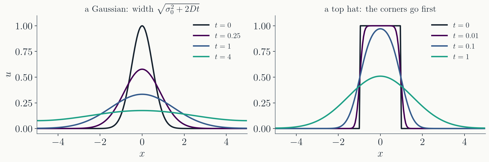

Von Neumann stability analysis: substitute a single wave
$u_j^n = \xi^n e^{ikx_j}$ into the scheme and require
$|\xi| \le 1$ for every $k$.
For FTCS on the advection equation,
$|\xi|^2 = 1 + C^2 \sin^2 k\Delta x > 1$. The scheme is
unstable for every time step.
Upwind, Lax-Friedrichs and Lax-Wendroff
are stable for $C = v\Delta t/\Delta x \le 1$, the CFL
condition.
The first-order schemes smear the profile.
The second-order scheme produces oscillations behind sharp
features.
Part I · The diffusion equation
Where it comes from and how its solutions behave
The equation
Heat conduction in a solid, dye
spreading in still water, viscosity in a fluid and the decay
of a magnetic field in a conductor are all described by the
same equation. For a density $u(x, t)$,
It follows from a conservation law,
$\partial_t u + \partial_x F = 0$, with a flux proportional to
the gradient, $F = -D\,\partial_x u$ (Fick's law for particles,
Fourier's law for heat).
The equation is linear, first order in time
and second order in space, with a single parameter $D$. Like
the advection equation it is an initial value problem.
The time to diffuse over a distance $\ell$
is $\ell^2/D$. Two lengths matter in a simulation: the box,
with time $L^2/D$, and one grid cell, with time
$\Delta x^2/D$.
Behaviour of the solutions

A single wave $e^{ikx}$ keeps its shape and
decays as $e^{-Dk^2 t}$. Short waves decay fastest. A kink in
the profile is made of short waves, so it is smoothed out
immediately. The advection equation preserved kinks.
A Gaussian remains a Gaussian, with
$\sigma^2 = \sigma_0^2 + 2Dt$. The widths in the figure are
$0.5$, $0.87$, $1.5$ and $2.9$ at $t = 0$, $0.25$, $1$, $4$.
The area under $u$ is conserved, so the peak falls as
$1/\sigma$.
The value at each point moves toward the
average of its neighbourhood, so no new maxima appear. The
solution at any point depends on the entire initial profile.
There are no characteristics.
Part II · FTCS on the diffusion equation
The same first scheme as for advection
The scheme
Forward difference in time, and the
three-point second difference of Lecture 12 in space:
$\alpha$ is the time step measured in units
of the diffusion time across one cell, $\Delta x^2/D$. It plays
the role that $C$ played for advection.
The scheme can be rearranged as
$u_j^{n+1} = (1 - 2\alpha)\,u_j^n + \alpha\,u_{j+1}^n
+ \alpha\,u_{j-1}^n$, so the new value is a weighted average
of the old value and its two neighbours.
It is also Euler's method applied to the
system of ODEs $du_j/dt = D\,(u_{j+1} - 2u_j + u_{j-1})/\Delta x^2$,
one equation per grid point.
The scheme is stable when $\alpha \leq \tfrac12$, that is
$\Delta t \leq \Delta x^2/2D$: the time step should be less
than half the diffusion time across a cell.
FTCS in action
Let's implement it: $1000$ grid points on $0 \le x \le 1$, so
$\Delta x = 10^{-3}$, with $D = 1$ and a Gaussian of width $0.1$.
Choosing $\alpha = \tfrac12$, so $\Delta t = \Delta x^2/2D =
5 \times 10^{-7}$. The movie shows $1000$ steps.
The problem with FTCS
It turns out $\Delta t \sim \Delta x^2/D$ is too slow. If we are
interested in things happening on length scales $L$, then we need
$n \sim L^2/\Delta x^2$ time steps! For the Gaussian of width
$L = 0.1$ on the grid with $\Delta x = 10^{-3}$ that is $10^4$
steps, and the movie showed $1000$ of them.
How can we take much larger time steps without
breaking the algorithm?
Part III · Implicit schemes
Implicit FTCS
Remember in ODEs, implicit schemes were introduced for stiff
problems to overcome stability problems (Lecture 7). We can use
the same concept here:
$$
\frac{u_j^{n+1} - u_j^n}{\Delta t} = D \frac{u_{j+1}^{n+1} - 2 u_j^{n+1} + u_{j-1}^{n+1}}{\Delta x^2}
$$
This is called the implicit FTCS, or BTCS, B for backward.
This is a tri-diagonal matrix that is diagonally dominant.
Implicit FTCS
At every time step, we solve the linear system:
$$
\mathbf{A} \mathbf{u}^{n+1} = \mathbf{u}^n
$$
Since $\mathbf{A}$ is tri-diagonal, we can use
the Thomas algorithm (Lecture 14),
the solver you wrote in Homework 7. $\mathbf{A}$ never changes over
time, so we find its LU decomposition once and reuse it at every
time step. One step costs $O(N)$, about twice an FTCS step.
Implicit FTCS in action
Let's see how it does. Same grid and initial profile, choosing
$\alpha = 100$, so $\Delta t = 10^{-4}$, two hundred times the
FTCS limit. The movie shows $100$ steps, to $t = 10^{-2}$.
Part IV · Crank-Nicolson
Second order accuracy in time
The implicit FTCS scheme is still 1st order accurate in time. To
achieve 2nd order accuracy in time, we can take the average between
the FTCS and implicit FTCS schemes:
The matrix $\mathbf{A}$ has $(-\tfrac{\alpha}{2}, 1 + \alpha, -\tfrac{\alpha}{2})$ on its
diagonals, while the matrix $\mathbf{B}$ has $(\tfrac{\alpha}{2}, 1 - \alpha, \tfrac{\alpha}{2})$
on its diagonals, with the same $\alpha = D\Delta t/\Delta x^2$.
Part V · The Schrödinger equation
The Schrödinger equation
The Schrödinger equation is the fundamental equation of quantum
mechanics:
It is like a diffusion equation in imaginary time,
so the methods today are applicable.
The Schrödinger equation
We first get rid of the units by performing non-dimensionalization,
the equation looks like:
$$
i \frac{\partial \psi}{\partial t} = -\frac{1}{2} \frac{\partial^2 \psi}{\partial x^2} + V(x) \psi
$$
Let's use the implicit FTCS scheme:
$$
i \frac{\psi_j^{n+1} - \psi_j^n}{\Delta t} = -\frac{1}{2} \frac{\psi_{j+1}^{n+1} - 2 \psi_j^{n+1} + \psi_{j-1}^{n+1}}{\Delta x^2} + V(x) \psi_j^{n+1}
$$
The Schrödinger equation
The amplification factor for the implicit FTCS scheme is:
The scheme is unconditionally stable. However, $|\xi| < 1$ in general, so it
does not preserve amplitudes. In quantum mechanical language, it is not unitary.
The Schrödinger equation
Unitarity is important in quantum mechanics. The wave function is
understood as a probability amplitude. The probability of finding the
particle at location $x$ is $P(x) = |\psi(x)|^2$. It satisfies the
normalization condition:
$$
\int_{-\infty}^{\infty} |\psi(x)|^2 dx = 1
$$
Amplitude decay is not a desirable trait of the numerical method when
solving quantum mechanics!
where $\hat{H}$ is the Hamiltonian operator, then the implicit FTCS
scheme is effectively:
$$
\psi^{n+1} = \left(1 + i\hat{H}\Delta t\right)^{-1} \psi^n
$$
$(1 + i\hat{H}\Delta t)^{-1}$ is a non-unitary approximation to the time evolution operator $e^{-i\hat{H}\Delta t}$.
The Schrödinger equation
The cure is to use the so-called "Cayley's form" for $e^{-i\hat{H}\Delta t}$:
$$
e^{-i\hat{H}\Delta t} \approx \frac{\displaystyle 1 - \frac{1}{2}i\hat{H}\Delta t}{\displaystyle 1 + \frac{1}{2}i\hat{H}\Delta t}
$$
Then the numerical scheme becomes:
$$
\left(1 + \frac{1}{2}i\hat{H}\Delta t\right)\psi_j^{n+1} = \left(1 - \frac{1}{2}i\hat{H}\Delta t\right)\psi_j^n
$$
In fact, this is equivalent to the Crank-Nicolson scheme!
The Schrödinger equation
Let's see the Crank-Nicolson scheme in action:
Summary
FTCS is stable for the diffusion equation when
$\Delta t \le \Delta x^2/2D$, which is too small a step.
Implicit FTCS (BTCS) is unconditionally
stable. Each step is a tri-diagonal solve.
Crank-Nicolson averages the two, is
unconditionally stable and second order in time.
For the Schrödinger equation
Crank-Nicolson is also unitary.